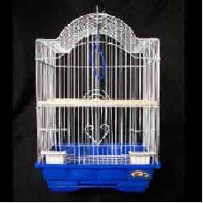
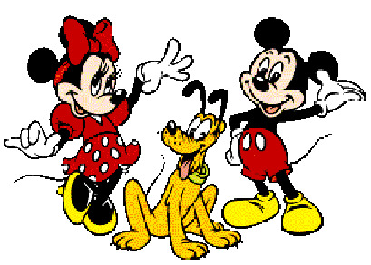

Created: 2023-09-26 mar 19:53
Deseamos construir un sitio para Tweety que es un AVE
¿Cómo debemos construirla?
¿Cuál elegimos?
|  |
¿Tweety?
¿Tweety?
¿Tweety?
Debemos Representar:
Generalmente las aves vuelan
\[ave(Tweety)\ |\!\!\!\sim\ vuela(Tweety)\]
Ante nueva información:
Tweety es un avestruz, dejamos de deducir que Tweety vuela.
\[ave(Tweety), avestruz(Tweety)\ \not{|\!\!\!\sim}\ vuela(Tweety)\]
La Lógica Clásica no permite formalizar cierto conocimiento de sentido común y manejar inconsistencias.
Leemos una tabla completa de horarios de colectivos para viajar de Nqn. a Buenos Aires de una empresa A.
\(cole\_desde\_hasta\_a(nqn,ba,22:30)\)
\(cole\_desde\_hasta\_a(nqn,ba,17:30)\)
\(cole\_desde\_hasta\_a(nqn,ba,13:00)\)
\(cole\_desde\_hasta\_a(nqn,ba,10:25)\)
\(cole\_desde\_hasta\_a(nqn,ba,7:10)\)
¿Hay un colectivo que vaya de Nqn. a Bs.As. a las 15:30?
¿Hay un colectivo que vaya de Nqn. a Bs.As. a las 15:30?
La respuesta es: NO
Sin embargo, con la Lógica Clásica no es posible derivar \[\neg cole\_desde\_hasta\_a(nqn,ba,15:30) \]
Closed World Assumption
Reglas con Excepciones - Información Incompleta
¿Cuándo podemos decir que un AVE vuela?
\[ave(X) \wedge \neg avestruz(X) \rightarrow vuela(X)\]
¿Alcanza?
Reglas con Excepciones - Información Incompleta
¿Cuándo podemos decir que un AVE vuela?
\[ave(X) \wedge \neg avestruz(X) \wedge \neg muerto(X)\wedge \neg ping\text{ü}ino(X)\wedge\] \[\neg rotas\_alas(X)\wedge \ldots \rightarrow vuela(X)\]
A menos que se tenga toda la información no podremos derivar en la Lógica Clásica que Tweety vuela.
Principio Ex falso quodilibit:
De datos inconsistentes podemos derivar todo el lenguaje
Supongamos que tenemos una base de conocimiento con entradas inconsistentes, por ejemplo:
tweety vuela
tweety no vuela
Desde estas entradas inconsistentes, podríamos concluir que Mickey Mouse es presidente de los EEUU y Minnie la primera dama

Utilizaremos la flecha de línea fina para indicar conocimiento tentativo y la flecha de línea gruesa para el conocimiento certero.
Veamos algunos ejemplos ….